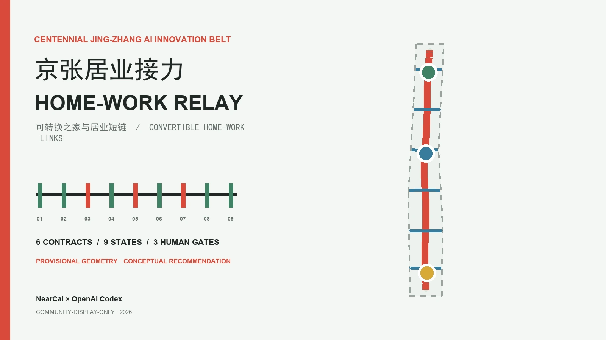

Coordinated Research Area
Strategy layer for industry, households and regional interfaces.

Convertible Homes and Short Links Between Living, Work and Services
1 PUBLIC SPINE · 3 STATIONS · 4 HOME STATES · 6 RELAYS · Concept design · field verification pending
Changing a project, team or life stage should not force home, workspace and everyday services to break at once. The spatial claim is a public spine, three stations and six relays with visible responsibility.

Provisional constraint, not a formal redline; recalculate everything when official polygons arrive.
Strategy layer for industry, households and regional interfaces.
Concept spatial and protocol layer within provisional geometry.
Three lifecycle prototypes; locations will be verified once formal polygons arrive.
Reading order: start with the spine and three station relationships, then inspect each relative topology and critical boundary; direction, scale and siting remain governed by provisional geometry.


Convertible arrival stay and live-work court; units, floors and ownership unknown.
Adaptable home and service pavilion; residents initiate every private-home action.
No parcel-level retain/renovate/demolish claim without surveys, rights and controls.

Centrelines show walking and service relationships for field study, not roads, crossings, structures or proof of accessibility.
Six contracts share nine states and three gates. The spatial claim comes first; select a contract to inspect human ownership, ordinary fallback and stop logic. The static state list remains readable without scripts.

No route, capacity, partnership or housing supply is claimed.
No commuting demand, joint programme or transfer agreement is claimed.
No official service integration or housing commitment is claimed.
No investment, employer, commuting flow or industrial relocation is claimed.
No regional platform, policy coordination or mobility result is claimed.

Replay requests, human receipt, ordinary routes, withdrawal and missing receivers without changing eligibility, contracts or space.
Evidence gate required for the next phaseTest three industry-validation protocols and human takeover only in authorized, reversible mock-up or service-desk settings.
Evidence gate required for the next phaseProfessionals, user representatives and operational roles decide whether to revise, continue within limits, retire or wait for evidence.
Evidence gate required for the next phase
Concept design · field verification pending · COST UNKNOWN · CAPACITY UNKNOWN
AI-off, staffed, accessible, night-time and multilingual routes share one denominator; failures, withdrawals and missing receivers remain visible. Communication uses evidence-based status labels.


Rent, housing stock, units, affordability, observed travel, capacity, cost, FAR, height, retention and field-validation outcomes remain unknown.
Traceable across prose, matrices, layers, figures and drawings.
Scenarios / industry validations / personas.
Valid contracts pass; invalid fixtures are rejected.
Internal checks are not approval, award, implementation or official-geometry scoring.
review_status=formal-review-ready; can_enter_formal_review=true; spatial_issues=3; visual_issues=0; professional_issues=0
Formal review is allowed; only provisional-boundary advisories remain and they are non-blocking.